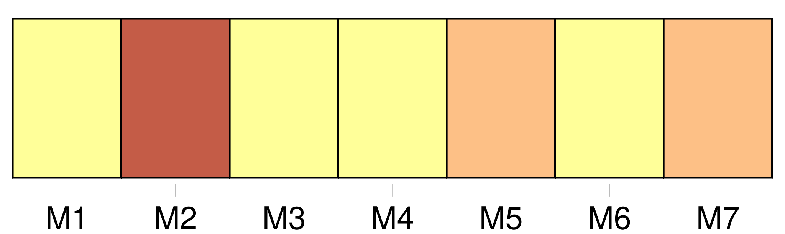
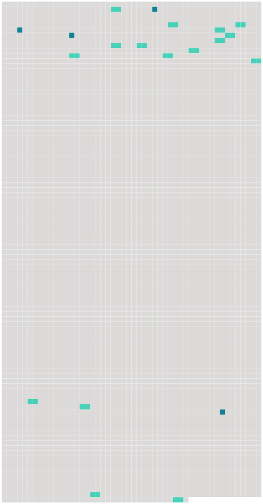

Longueur nb maillons : 20 mentions |
  |
L'expéditeur a le droit, à la condition d'exécuter toutes les obligations résultant du contrat de transport, de disposer de la marchandise, soit en la retirant à l'aéroport de départ ou de destination, soit en l'arrêtant en cours de route lors d'un atterrissage, soit en la faisant livrer au lieu de destination ou en cours de route à une personne autre que [le destinataire] initialement désigné, soit en demandant [son] retour à l'aéroport de départ, pour autant que l'exercice de ce droit ne porte préjudice ni au transporteur, ni aux autres expéditeurs et avec l'obligation de rembourser les frais qui en résultent. [5 phrases] Le droit de l'expéditeur cesse au moment où celui [du destinataire] commence, conformément à l'article 13.
Toutefois, si [le destinataire] refuse la marchandise, ou s' [il] ne peut être joint, l'expéditeur reprend son droit de disposition. [1 phrases]
Sauf lorsque l'expéditeur a exercé le droit qu'il tient de l'article 12, [le destinataire] a le droit, dès l'arrivée de la marchandise au point de destination, de demander au transporteur de [lui] livrer la marchandise contre le paiement du montant des créances et contre l'exécution des conditions de transport. [1 phrases]
Sauf stipulation contraire, le transporteur doit aviser [le destinataire] dès l'arrivée de la marchandise. [1 phrases]
Si la perte de la marchandise est reconnue par le transporteur ou si, à l'expiration d'un délai de sept jours après qu'elle aurait dû arriver, la marchandise n'est pas arrivée, [le destinataire] est autorisé à faire valoir vis-à-vis du transporteur les droits résultant du contrat de transport.
Article 14
Article 15
Les articles 12, 13 et 14 ne portent préjudice ni aux rapports entre l'expéditeur et [le destinataire] , ni aux rapports mutuels des tierces parties dont les droits proviennent de l'expéditeur ou [du destinataire] [3 phrases] L'expéditeur est tenu de fournir les renseignements et les documents qui, avant la remise de la marchandise [au destinataire] , sont nécessaires à l'accomplissement des formalités de douane, de police ou d'autres autorités publiques. [86 phrases]
La réception des bagages enregistrés et des marchandises sans protestation par [le destinataire] constituera présomption, sauf preuve du contraire, que les bagages et marchandises ont été livrés en bon état et conformément au titre de transport ou aux indications consignées par les autres moyens visés à l'article 3, paragraphe 2, et à l'article 4, paragraphe 2. [1 phrases] En cas d'avarie, [le destinataire] doit adresser au transporteur une protestation immédiatement après la découverte de l'avarie et, au plus tard, dans un délai de sept jours pour les bagages enregistrés et de quatorze jours pour les marchandises à dater de leur réception.
En cas de retard, la protestation devra être faite au plus tard dans les vingt et un jours à dater du jour où le bagage ou la marchandise auront été mis à [sa] disposition. [32 phrases] S'il s'agit de bagages ou de marchandises, le passager ou l'expéditeur aura recours contre le premier transporteur, et [le destinataire] ou le passager qui a le droit à la délivrance contre le dernier, et l'un et l'autre pourront, en outre, agir contre le transporteur ayant effectué le transport au cours duquel la destruction, la perte, l'avarie ou le retard se sont produits.
Ces transporteurs seront solidairement responsables envers le passager, ou l'expéditeur ou [le destinataire] |
 |
La ressource peut être téléchargée sur la page Ortolang
Si vous avez des questions ou vous voyez des erreurs, merci d'envoyer un mail à silvia.federzoni89@gmail.com
Site développé par S. Federzoni (contact)